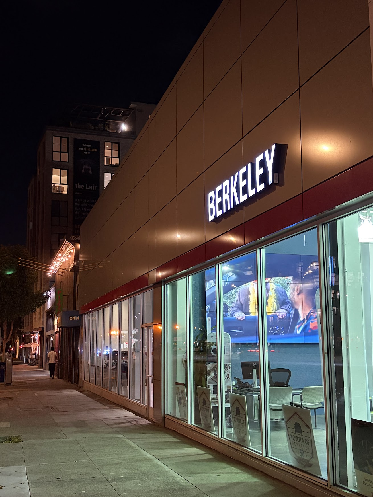

Becoming Friends with Your Camera
01
Selfie: Wrong Way vs. The Right Way
I photographed myself first from close up 1x, then from farther away 5x while zooming in to keep my face the same size.
images/selfie1x.jpg
images/selfie5x.JPG
02
Architectural Perspective Compression

images/architectural_close.jpg

images/architectural_far_zoom.jpg
03
Dolly Zoom
I moved backward while zooming in, adjusting the focal length in each frame to keep the main subject roughly the same size.

images/dolly-zoom.gif